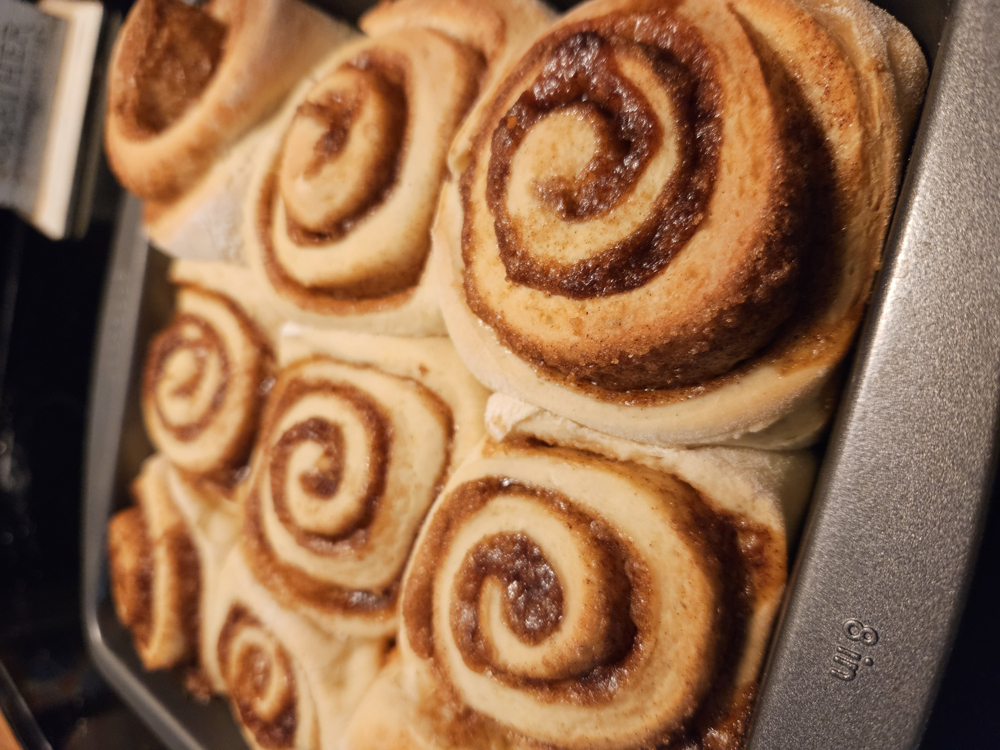
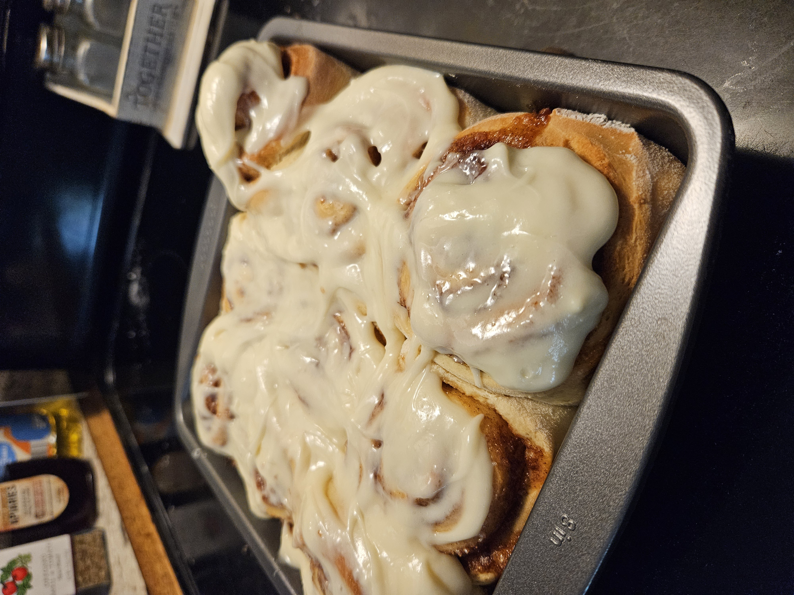

Return Home
Apple Cinnamon Rolls


Description
A different take on the classic cinnamon roll.
An apple filling and maple cream cheese
frosting make this a perfect fall bake.
Ingredients
For the dough
- 3/4 cup milk
- 1/3 cup sugar
- 2 1/4 teaspoons active dry yeast
- 1 egg, room temperature
- 1 egg yolk, room temperature
- 3 1/4 cups AP flour
- 1/4 teaspoon salt
- 6 tablespoons unsalted butter, room temperature
- Cooking spray or oil to grease the bowl
For the filling
- 2/3 cup dark brown sugar
- 1 tablespoon cinnamon
- 1/4 cup butter
- 2 medium sized apples, peeled and finely chopped
For the frosting
- 4 ounces cream cheese, room temperature
- 1/4 cup unsalted butter, room temperature
- 2 tablespoons maple syrup
- 1 teaspoon vanilla extract
- 3/4 cup powdered sugar
Steps
- Warm the milk. Add the milk, sugar and yeast to bowl of a stand mixer.
Let stand for 5 minutes.
- Add the egg and yolk and mix until combined using a dough hook.
- Add the flour and salt and continue to mix on medium until dough forms.
- Slowly mix in the butter, waiting for it to incorporate.
- After all the butter has incorporated, knead the dough on medium speed
for 8 minutes
- Transfer dough to a greased bowl and let rise for 1-2 hours
- On a floured surface, roll out the dough flat.
- Mix the brown sugar and cinnamon together in a bowl
- Spread the softened butter over the rectangle of dough
- Sprinkle the cinnamon sugar over the dough and top with the apple pieces
- Tightly roll the dough into a log and cut into 1-inch pieces
- Place the pieces in a baking dish, cover, and let sit for 30 minutes
- As the rolls are resting, preheat the oven to 350 degrees F
- Bake for 25 minutes, until golden brown
- As the cinnamon rolls are baking add the cream cheese and butter for the frosting
to a bowl and using a hand mixer, beat them together.
- Add the maple syrup and vanilla and mix until incorporated
- Add the powdered sugar 1/4 cup at a time, mixing until all sugar is incorporated
- After the cinnamon rolls come out of the oven, let them cool for 10 minutes then
spread the frosting over top of them and serve warm.